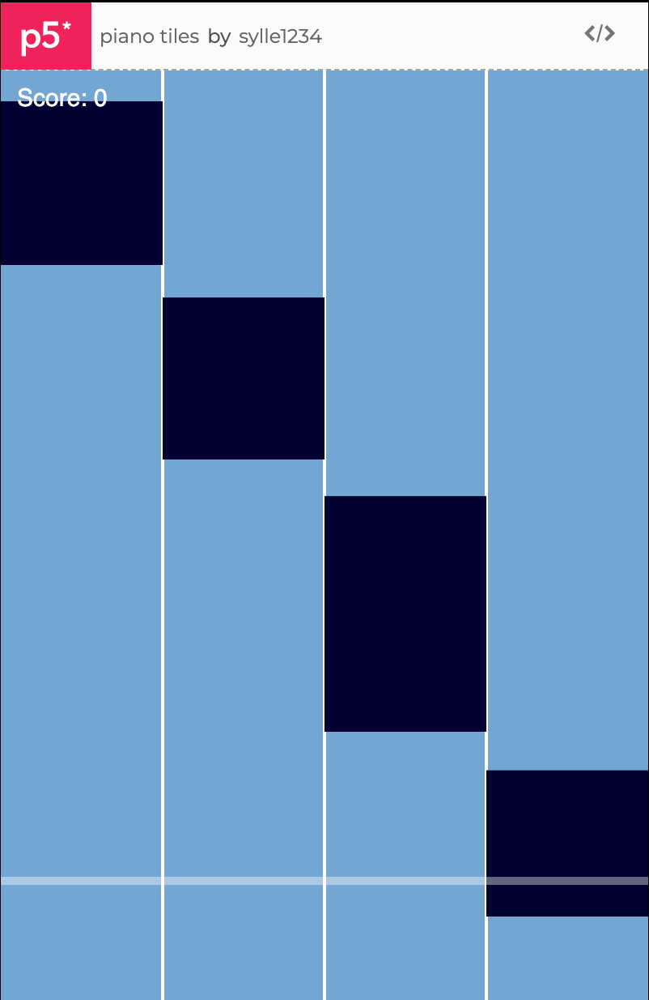
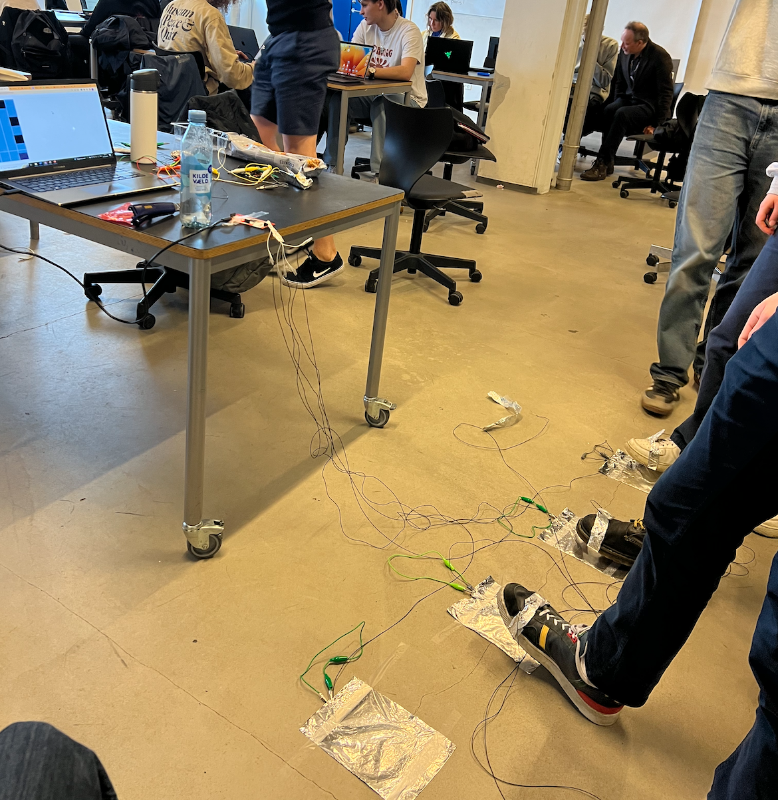
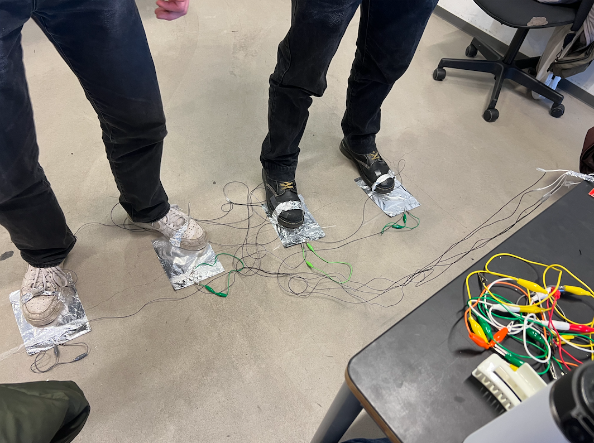
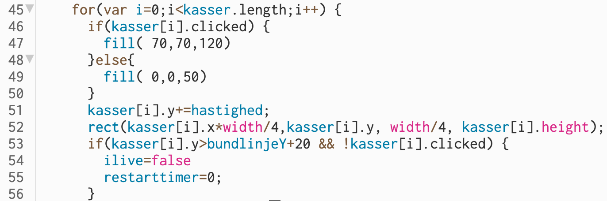

Mit informatik portfolio
Spil og leg
I dette emne har vi lavet vores egne spil. Min gruppe bestående af mig, Alba, Sylvester, Frederik Lerche og Sven valgte at lave et spil der minder meget om "piano tiles". Det er et musikspil, hvor det gælder om at ramme nogle knapper på de rigtige tidspunkter for at musikken spiller.
Vores spil
Her ses vores spil:

Som det kan ses, så er der fire rækker, hvor der kommer sorte firkanter i. Det handler så om at ramme disse firkanter når de er ved stregen og dermed trykke på dem. Hvis man misser, så "dør" man og skal starte forfra.
Vi programmerede spillet i "p5js editor" og derefter koblet det til en "Makey Makey". En "Makey Makey" er en slags styreenhed der kan koble vores spil sammen med virkeligheden. Det vil altså sige at vi lavede nogle "knapper" ud af sølvpapir, som vi så koblede på Makey Makeyen, så man kunne bruge knapperne til at spille spillet. Dette ses også her på disse billeder af folk det spiller vores spil:


Som det kan ses havde vi lavet 4 knapper som man kunne trykke på med foden. Dette var muligt, da vi havde sølvpapir der var koblet til makeymakeyen på foden. De 4 knapper er altså de fire baner i vores spil og man kunne derfor være optil 4 personer om vores multiplayer spil.
Gennemgang af relevant kodestykke

Linje 45-50: "for" betyder at der starter en løkke og i denne løkke ses det at variablen i også oprettes og sættes til 0 og derefter stiger med 1 efter hver iteration. Herefter ses det at hvis kassen bliver klikket på så bliver den udfyldt i en lysere farve og hvis den ikke bliver klikket på, så forbliver den den mørke farve som den er.
Linje 51-56: Her ses det at kasserne bevæger sig længere og længere ned af skærmen og hvis den så når ned under variablen "bundlinje", som er den streg der er nederst på skærmen, så starter spillet forfra. Altså hvis statementet "ilive" er forkert (false) så dør man og dermed restarter tiden.